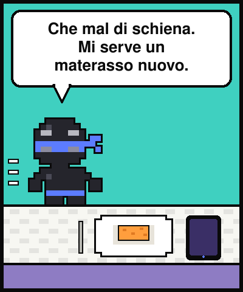
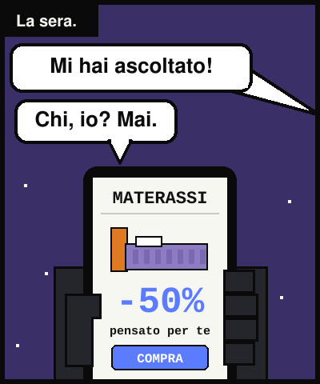
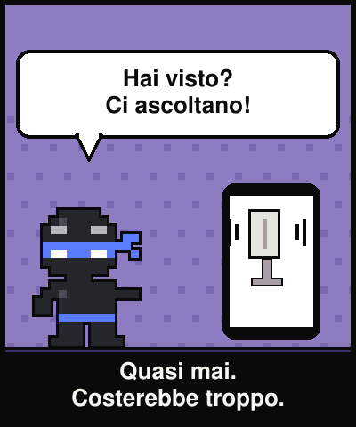
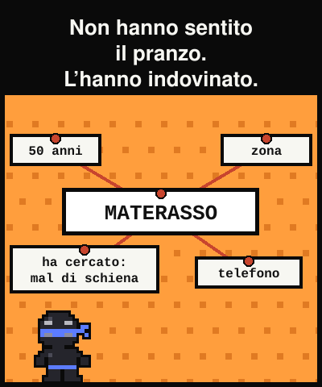
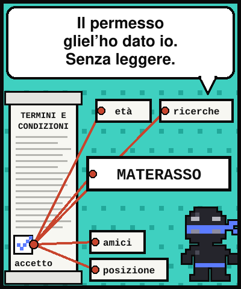
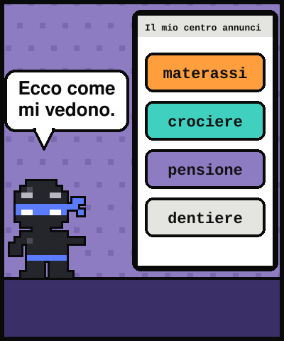
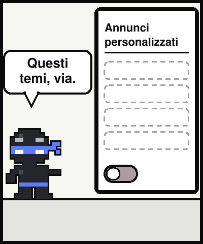
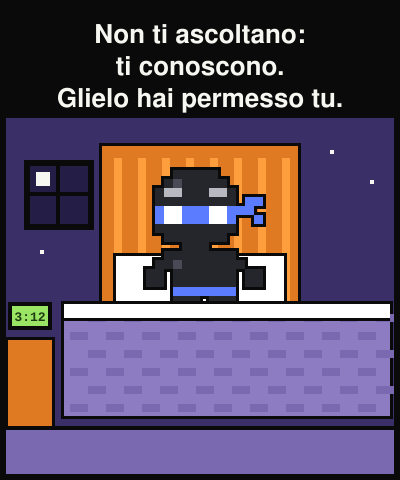

Lezione dal 2077 · n.004
Parlo di materassi a pranzo, la sera vedo annunci di materassi. Il microfono è innocente — e la spiegazione vera fa più impressione.








Pranzo di famiglia: si parla di materassi. La sera il telefono è pieno di materassi.
«Hai visto? Ci ascoltano.»
Quasi mai: ascoltare milioni di persone costerebbe troppo, e non serve. Hanno un profilo: cosa cerchi, che siti visiti, età, zona. Da lì deducono.
Non hanno sentito il pranzo. Hanno indovinato il pranzo.
«Non ti ascoltano: ti conoscono. E si dorme peggio, altro che materasso.»